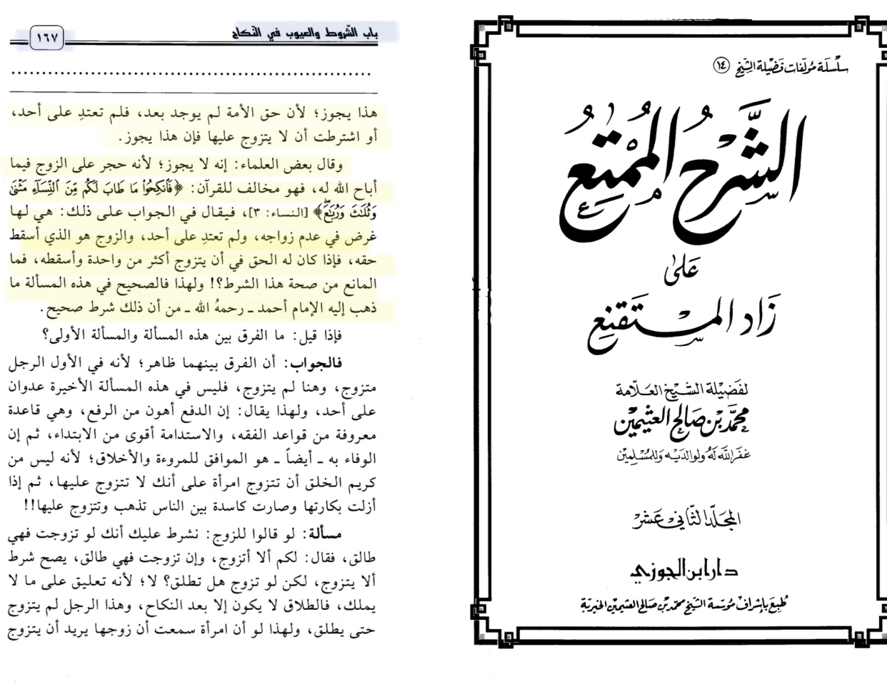
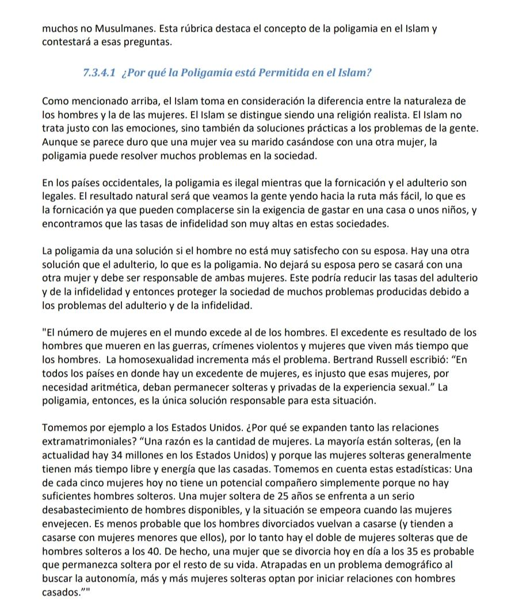
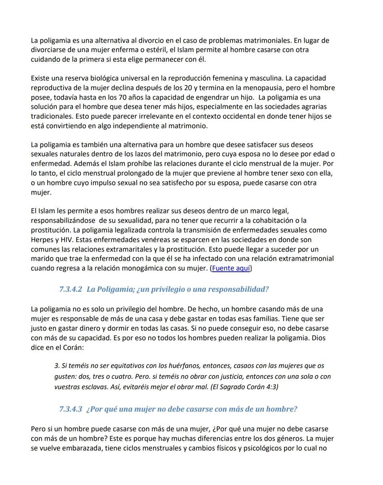
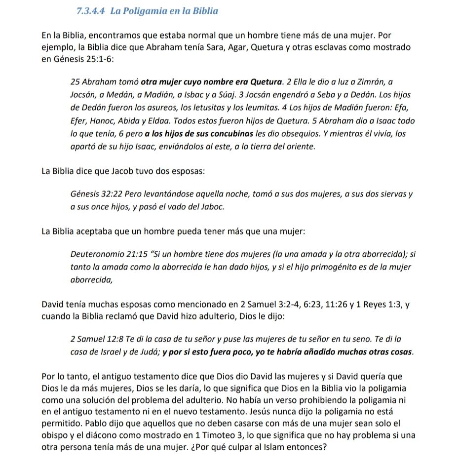
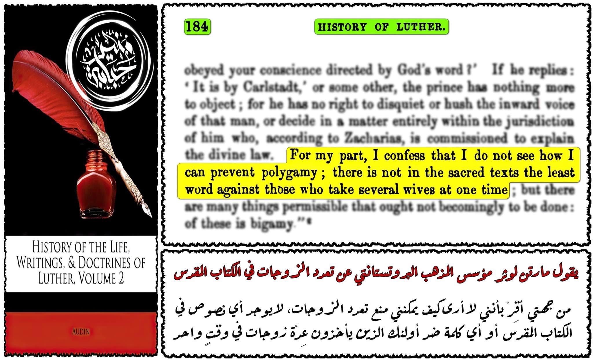

https://m.youtube.com/watch?v=r-lAZxywf_0&t=144s
In al-Sharh al-mumti’ ibn uthaymiin (RH) says
it is permissible according to the conditions of the hanbali madhab that a women rights a contract to her husband that he marries no other woman other than her if he accepts that and he refuted the argument it isn’t permissible.
-Source: Al-Sharh al-mumti’ī volume 12 page number 168

For the question why can’t women first it is hard to know who is the father second would you accept it to your mom as we said before men and women have different roles and are different

7.3.4 Polygamy
Why does Islam accept that a man can marry up to 4 women? Why is polygamy allowed in Islam? Isn't that an oppression? It is a common question asked by
many non-Muslims. This rubric highlights the concept of polygamy in Islam and will answer those questions.
7.3.4.1 Why is Polygamy Permitted in Islam?
As mentioned above, Islam takes into consideration the difference between the nature of men and women. Islam distinguishes itself by being a realistic religion. Islam does not just deal with emotions, but also gives practical solutions to people's problems. Although it seems harsh for a woman to see her husband marry another woman, polygamy can solve many problems in society.
In Western countries, polygamy is illegal while fornication and adultery are
legal. The natural result will be that we see people going the easier route, which is
fornication since they can indulge themselves without the requirement to spend on a house or children, and
we find that infidelity rates are very high in these societies. Polygamy provides a solution if the man is not very satisfied with his wife. There is another solution than adultery, which is polygamy. He will not leave his wife but will marry another woman and must be responsible for both women. This could reduce the rates of adultery and infidelity and thus protect the society from many problems caused due to
the problems of adultery and infidelity.
"The number of women in the world exceeds that of men. The surplus is a result of men dying in wars, violent crime, and women living longer than men. Homosexuality further increases the problem. Bertrand Russell wrote: “In all countries where there is a surplus of women, it is unfair that those women, by arithmetical necessity, should remain single and deprived of sexual experience.” Polygamy, then, is the only responsible solution to this situation.
Take for example the United States. Why are extramarital relationships so widespread? "One reason is the number of women. Most are single (there are currently 34 million in the United States) and because single women generally have more free time and energy than married women. Consider these statistics: One of every five women today do not have a potential partner simply because there are not enough single men A single 25-year-old woman faces a serious shortage of available men, and the situation worsens as women age Divorced men are less likely to remarry (and they tend to marry younger women), so there are twice as many single women as single men at 40. In fact, a woman who divorces today at 35 is likely to remain single for the rest of her life. Caught in a demographic snag in seeking autonomy, more and more single women are choosing to start relationships with married men."

Polygamy is an alternative to divorce in the case of marital problems. Instead of
divorcing a sick or barren woman, Islam allows a man to marry another taking care of the former if she chooses to stay with him. There is a universal biological reserve in male and female reproduction. The reproductive capacity of the woman declines after the age of 20 and ends at the menopause, but the man still possesses, up to the age of 70, the capacity to father a child. polygamy is a
solution for the man who wishes to have more children, especially in agrarian societies
traditional. This may seem irrelevant in the western context where having children is
it is making something independent of marriage.
Polygamy is also an alternative for a man who wants to satisfy his natural sexual desires within the bonds of marriage, but whose wife does not want it because of age or illness. Furthermore, Islam forbids intercourse during a woman's menstrual cycle. Therefore, a woman's prolonged menstrual cycle that prevents a man from having sex with her, or a man whose sex drive is not satisfied by his wife, may marry another woman.
Islam allows such men to carry out their wishes within a legal framework,
taking responsibility for their sexuality, so as not to have to resort to cohabitation or
prostitution. Legalized polygamy controls the transmission of sexual diseases such as
Herpes and HIV. These venereal diseases spread in societies where they are
extramarital affairs and prostitution are common. This can happen for a
husband who brings the disease with which he has been infected with an extramarital affair
when he returns to the monogamous relationship with his wife. (source here)
https://www.islamreligion.com/es/articles/328/razones-por-las-cuales-el-islam-permite-la-poligamia/
7.3.4.2 Polygamy; a privilege or a responsibility?
Polygamy is not just a man's privilege. In fact, a man marrying more than one woman is responsible for more than one household and must spend on all those families. Must be
fair in spending money and sleeping in all the houses. If you can't get that, you shouldn't marry more than your capacity. That is why not all men can perform polygamy. God says in the Qur'an:
3. If you fear not being fair to orphans, then marry the women who care for you.
like: two, three or four. But if you fear not doing justly, then with one or with
your slaves. Thus, you will better avoid doing wrong. (The Holy Quran 4:3)
7.3.4.3 Why should a woman not marry more than one man?
But if a man can marry more than one woman, why shouldn't a woman marry more than one man? This is because there are many differences between the two genders. The woman becomes pregnant, has menstrual cycles and physical and psychological changes for which she does not
You can marry more than one man. In addition, the man has the tendency more than a woman, unlike women. Men and women see each other in a different way.
---------------------------------------
Now let's look at the bible

7.3.4.4 Polygamy in the Bible
In the Bible, we find that it was normal for a man to have more than one woman. For example, the Bible says that Abraham had Sarah, Hagar, Quetura, and other female slaves as shown in Genesis 25:1-6:
25 Abraham took another wife whose name was Quetura. 2 She gave birth to Zimron,
Jocson, Medon, Madion, Ishbok, and Swaj. 3 Jocsán fathered Sheba and Dedon. The sons of Dedon were the Asureans, the Lethusites, and the Leumites. 4 The sons of Madion were: Epho, Epher, Hanoch, Abida and Eldaa. All these were sons of Quetura. 5 Abraham gave Isaac all that he had, 6 but to the sons of his concubines he gave gifts. And while he lived, he separated them from his son Isaac, sending them to the east, to the land of the east.
The Bible says that Jacob had two wives:
Genesis 32:22 But getting up that night, he took his two wives, his two female servants, and
his eleven sons, and crossed the ford of Jabbok
The Bible accepted that a man can have more than one woman: Deuteronomy 21:15 "If a man has two wives (one loved and the other hated); if
both the beloved and the hated have borne children to him, and if the firstborn son is of the woman
bored,
David had many wives as mentioned in 2 Samuel 3:2-4, 6:23, 11:26 and 1 Kings 1:3, and when the Bible claimed that David committed adultery, God told him:
2 Samuel 12:8 I gave you your master's house and placed your master's wives in your bosom. I gave you the
house of Israel and of Judo; and as if this were not enough, I would have added many other things to you.
Therefore, the old testament says that God gave David women and if David wanted God to give him more women, God would give them, which means that God in the Bible saw polygamy as a solution to the problem of adultery. There was no verse forbidding polygamy in either the Old Testament or the New Testament. Jesus never said polygamy is not allowed. Paul said that those who should not marry more than one woman are only the bishop and the deacon as shown in 1 Timothy 3, which means that there is no problem if another person had more than one woman. Why blame Islam then?
---------------------------------------
Source:
DOC-20220418-WA0052. Pages: 113-116
https://www.abuaminaelias.com/should-a-muslim-man-marry-a-second-wife/
https://www.abuaminaelias.com/why-does-islam-allow-polygamy/
